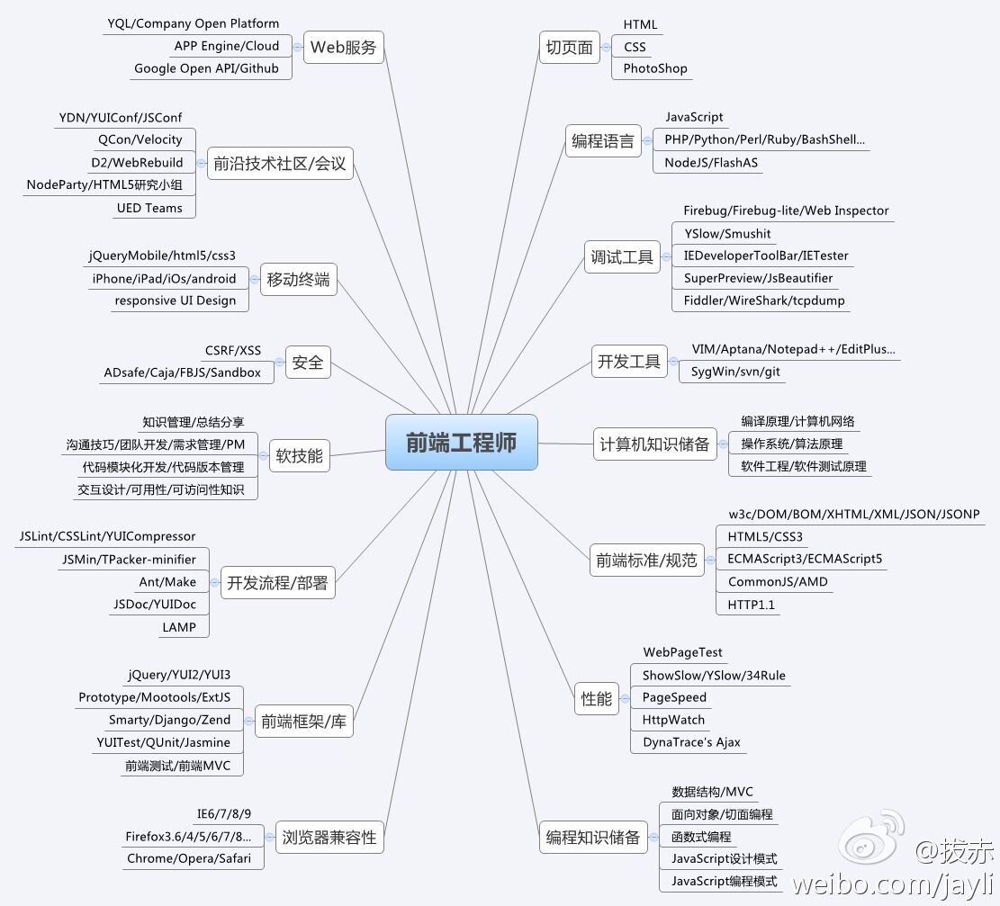

Murphy Leung 流星酱的个人博客
Murphy Leung 's Personal Blog
View on GitHub
Download .zip
Download .tar.gz
Murphy Leung 's Personal Blog
https://1025623017.github.io/blog
https://guides.github.com/features/mastering-markdown/
